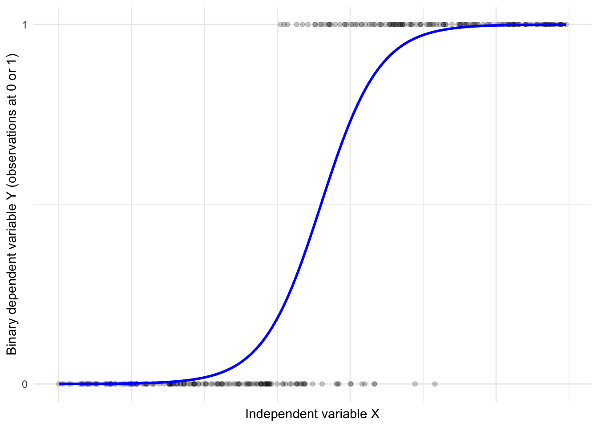
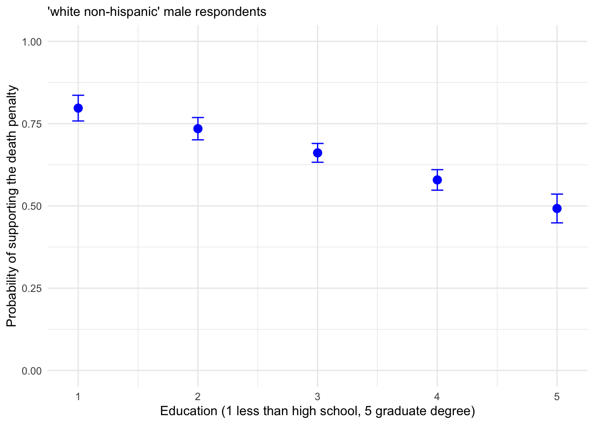
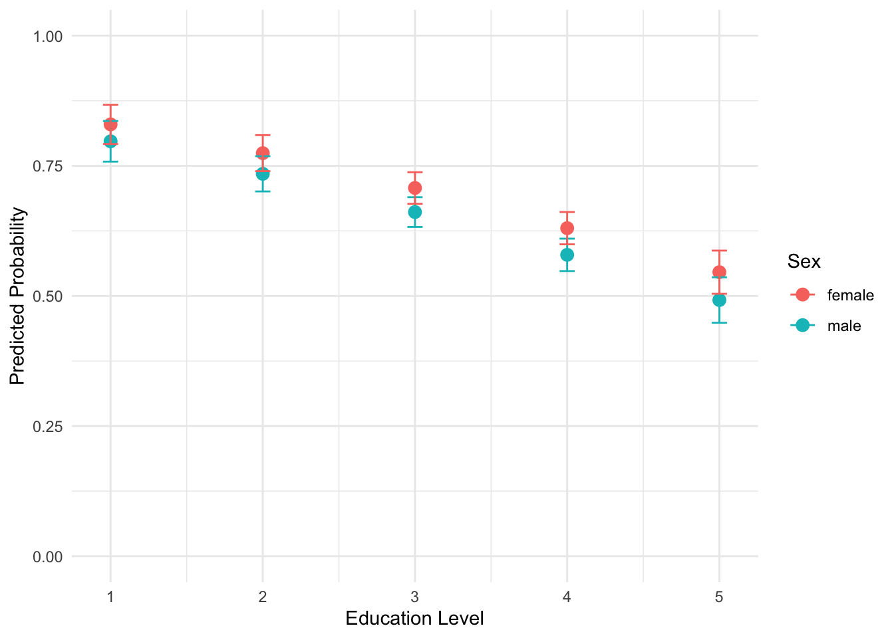
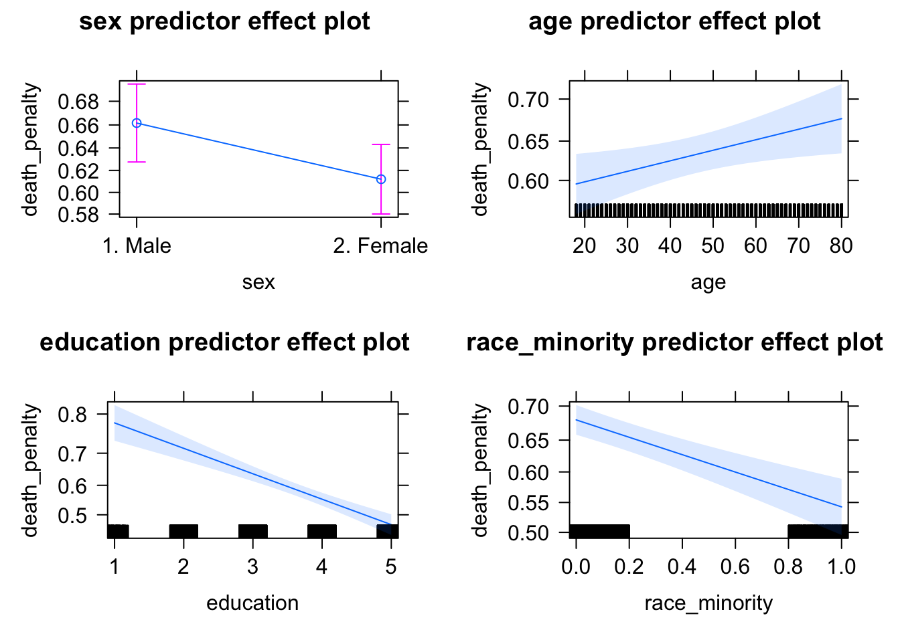
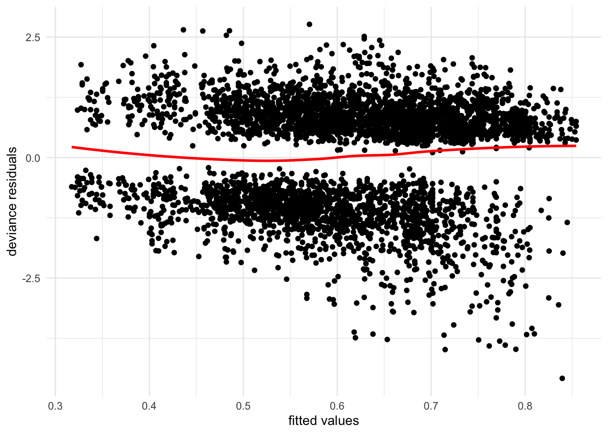

Chapter 12 Linear Models for Binary Outcomes
Chapter 12 introduces linear models for binary (two-level) dependent variables.
Learning objectives and chapter resources
By the end of Chapter 12 you should be able to (1) explain key concepts in forming binary logistic regression models; (2) interpret the summary of model output; and (3) generate tables and graphics of model based predicted probabilities. The material in the chapter requires the following packages: jtools (J. A. Long 2023), effects (Fox et al. 2022), and sjPlot (Lüdecke 2024) which will need to be installed, as well as survey (Lumley 2021), car (Fox, Weisberg, and Price 2022), and dplyr (Wickham, François, et al. 2023) from the tidyverse (Wickham 2023b). The material uses anes 2020 survey.rdata from https://faculty.gvsu.edu/kilburnw/inpolr.html.
12.1 Introduction
In this chapter we review a particular type of linear model, binary logistic regression, for the analysis of variation in dichotomous (or binary) dependent variables. Dichotomous measures contrast presence and absence (or ‘success’ and ‘failure’), such as in an election poll respondents reporting that they voted (or not), or supported (or opposed) a particular policy. Through a logistic regression model, just as in the OLS regression models from Chapters 10 and 11, we estimate slopes on independent variables to examine the multiple factors that explain the variation in these outcomes, such as why some people voted while others did not. This application of logistic regression is often referred to as “binary logistic regression”, binary in reference to the scaling of the dependent variable.
Applying the same lm() type functions from Chapters 10 and 11 to dichotomous dependent variables is problematic. Instead, statisticians have developed “Generalized Linear Models”, for which linear regressions with a continuously scaled, binary, or ordinal dependent variable are special cases. We first review key concepts in the estimation and interpretation of these models for binary logistic regression, followed by an example with R code for modeling Americans’ support or opposition to the death penalty for capital crimes.
12.2 Conceptualizing binary logistic regression
As a starting point, recall that the dependent variable, having only two outcomes, could be scored 0 for a ‘failure’ or lack of an attribute and 1 for a ‘success’ or attribute. Ranging from 0 to 1, it could be interpreted in probabilistic terms. Applying a linear regression function (such as lm()) to model variation in this dependent variable results in the linear probability model. The term “probability” references the purpose of such a model – to examine how the probability of a value of 1 on the dependent variable changes as a linear function of the independent variables. For example, with data from the 2020 ANES, responses to the question of whether an individual supports the death penalty, considered as either “opposes” (0) or “supports” (1), we could construct a linear regression model of death penalty support as a function of various demographic characteristics. The primary problem with this approach, however, is that doing so violates some of the assumptions required for valid OLS regression model estimation: Because of the 0 or 1 variable scaling, errors are not normally distributed, the model induces heteroskedasticity, and perhaps most problematically the model-based predictions could easily be out of bounds, that is, a predicted probability that is less than 0 or greater than 1.
Researchers turn instead to “logistic regression”. Like a multiple linear regression, the goal of a logistic regression is to estimate an intercept and slopes for independent variables. Instead of fitting a straight line through the data, a logistic regression fits an S-shaped curve to transformed values on the dependent variable, constrained at the probability boundaries of 0 and 1. The line guarantees that predictions never exceed these limits. Figure 12.1 displays this curve, fitting a curve of best fit to hypothetical data.

FIGURE 12.1: Hypothetical logistic regression S-shaped curve relating observations on a continuous X to a dichotomous Y.
Rather than model the dependent variable directly, logistic regression first transforms the dependent variable (scored 0 or 1) into a quantity called ‘log-odds.’ Odds are ratios, the ratio of a probability \(p\) to \((1-p)\):
\(Odds = \frac{p}{(1-p)}\)
For example, if the probability of an American voting age citizen supporting the death penalty is .65 or 65 percent, then the odds of supporting the death penalty are \(\frac{.65}{(1-.65)} = 1.857\).
The ‘log-odds’ is simply the natural logarithm of the odds, called a “logit”:
\(logit=ln(\frac{p}{(1-p)})\).
Given the probability of .65 (or odds of 1.857) the logged odds log(1.857) is .619. To further explain odds, consider this example from the 2020 ANES. We tabulate death penalty support (see question V201345x in the 2020 ANES data appendix) by respondent sex. (The code for creating the individual measures from the survey is presented further below.) For now, consider the cross-tabulation of death penalty attitude by sex:
## sex
## death_penalty 1. Male 2. Female
## Oppose 773 944
## Favor 1487 1466The tabulation displays the frequencies. So the table shows, for example, that 773 male respondents opposed the death penalty. A probability of an individual supporting the death penalty is the likelihood of it occurring, as a proportion between 0 (not occurring) and 1 (occurring with certainty).
Given the total number of males and females in the sample, we can calculate the probability of any given male or female supporting the death penalty. The total for males (773 + 1487) is 2260. The probability of a male supporting the death penalty \(\frac{1487}{2260} \approx .66\). The total for females (944 + 1466) is 2410. The probability of a female supporting the death penalty is \(\frac{1466}{2410} \approx .61\).
Odds are ratios of probabilities. The odds of an individual supporting the death penalty is the ratio of the probability of supporting it divided by the probability of opposing it. Odds can be expressed as
\(Odds = \frac{P}{1-P}\),
where \(P\) is the probability of an event occuring.
The probability of a male supporting the death penalty is approximately .66; the probability of opposing is \(1-.66 \approx .34\). The odds of a male supporting the death penalty are \(\frac{.66}{.34} = 1.94\). The odds of a male supporting the death penalty are about 1.94 to 1, meaning that for every male who opposes the death penalty, approximately 1.94 support it. For females, odds of supporting the death penalty are \(\frac{.61}{.39} \approx 1.56\). For females the odds are about 1.56 to 1. Thus the odds are slightly higher that any given male will support the death penalty compared to females.
Comparing two odds yields the odds ratio, a measure of the relative odds between two groups. As a ratio, it is a division of one odds by another. The odds ratio comparing female support to male support is:
Odds ratio \(\frac{Odds (female) }{Odds (male)}\) or \(\frac{1.56}{1.94} \approx .80\).
An odds ratio of .80 means that the odds of a female supporting the death penalty are about 80 percent of the odds of a male supporting it. Probabilities, odds, and odds ratios all describe the same phenomenon under study, but are expressed in different units. Simply personal preference may determine which appears the most intuitive. It is helpful to remember that (a) if the probability of an event occurring is less than .5, then the odds are less than 1; and (b) if the probability of an event occurring has a probability greater than .5 then the odds are greater than 1.
In a logistic regression model, with the dependent variable (Y) converted to logits, and a set of independent (X) variables, the algorithm for logistic regression finds a best fitting y-intercept and slopes for each X. Note that the model is still a linear model — the logit is expressed as a linear function of the independent variables:
\(logit(p) = log(\frac{p}{(1-p)})= \beta_0 +\beta_1x_1+\beta_2x_2+...+\beta_kx_k\)$
The parameters (coefficients) from the model are \(\beta_0\) the estimated intercept, with the estimated slopes \(\beta_1, \beta_2, ..., \beta_k\). And the independent variables are \(x_1, x_2, x_3, ..., x_k\). This is where the ‘linear’ in linear model comes from: the model is linear with respect to the parameters and the predictors, even though the relationship between the predictors and the actual probability \(p\) (the s-curve) is nonlinear.
Modeling support versus opposition to the death penalty
Below we review a logistic regression model, followed by the R code, of Americans’ support or opposition to the death penalty for capital crimes. The data are from the 2020 ANES. The first is a simple example to illustrate the concepts involved in interpreting a logistic regression model. While the R code presents a fuller model and interpretation.
Often a goal of logistic regression modeling is to estimate probabilities given observations with the same values on the X independent variables. For example, a model of attitudes toward the death penalty (support or oppose) based on demographic characteristics could estimate the probability of supporting the death penalty given a particular set of individual characteristics such as education level, age, and race. The logistic regression model is then intended to provide estimates of the probability of the dependent variable being equal to 1 (or “support”) given values on the independent variables.
Consider the estimates for a simplified model, death penalty support (1) or opposition (0) as a function of just one X variable, individual educational attainment, measured on a five-point scale from 1 (less than a high school diploma) to 5 (a graduate degree). The education variable records degree attainment on an ordinal scale. For ease of interpretation, the model estimates one constant slope parameter across the scale rather than multiple slopes for categorical ‘dummy variables’. Imagine we run the R code and find the model estimates correspond to this equation:
\(logit(death penalty support) = 1.5 - .302*x_{education}\)
This equation includes a y-intercept and a slope on education. The model estimates are in units of ‘logit’ or log-odds: 1.5 is the logit of supporting the death penalty for someone with a hypothetical ‘0’ score on the education variable. The slope on education, -.302, means that for each unit increase in the education scale, the logit of supporting the death penalty decreases by .302 units. A logit is not an intuitive metric. Fortunately, we can convert the estimates to odds ratios and probabilities.
By exponentiating the y-intercept and slope (raising \(e\), Euler’s number$ $ to the power of the estimate), we remove the log, resulting in the odds and odds ratios. For example, while corresponding to a hypothetical person with a “0” education, the \(e^{1.5}=4.482\). (In R, exp(1.5)). For this hypothetical person, the odds of supporting the death penalty are 4.48 to 1, or 4.48 times more likely to be supported than not. While the scale of odds is practically limitless and generally dependent on units of measurement, these odds are very high.
For education, \(e^{-.302}= .739\). The result, .739, is the odds ratio associated with a one-unit increase in the education level. An odds ratio of 0.739 means that for each one-unit increase in education, the odds of supporting the death penalty decrease. The odds are multiplied by 0.739 with each additional unit increase in education. The decrease in odds is calculated as \((1-.739)\), a decrease of about .261 or 26.1 percent. In this sense, the odds of supporting the death penalty decrease by about 26.1 percent for each one-unit increase in education level. An alternative interpretation is based on probabilities; because probabilities are scaled from 0 to 1, some researchers prefer working with probabilities rather than odds ratios.
Calculating the predicted probabilities requires some additional arithmetic, to pull out the predicted probabilities within the model equation of the log-odds: \(ln(\frac{p}{(1-p)}) = 1.5 - .302*x_{education}\). To calculate the predicted probability for a person with a high school diploma (education = 2), we substitute 2 into the equation:
\(ln(\frac{p}{(1-p)}) = 1.5 - .302 \times 2\)
\(ln(\frac{p}{(1-p)}) = 1.5 - .604= .896\).
To remove the natural logarithm (\(ln\)), we exponentiate both sides of the equation:
\(\frac{p}{(1-p)}=e^{.896}\)
Calculating \(e^{.896}\), (in R exp(.896)), is 2.45. From \(\frac{p}{(1-p)}=2.45\), we solve for \(p\) by multiplying both sides by \((1-p)\) resulting in
\(p=2.45 \times (1-p)\)
From \(p=2.45-2.45p\), we rearrange terms to get to \(p+2.45p=2.45\).
The terms \(p+2.45p\) combine as \(1+2.45\), since the coefficient of the first \(p\) is 1.
So \(3.45p=2.45\). And finally, \(p=\frac{2.45}{3.45}\), which equals about .71, the probability of someone with a high school diploma supporting the death penalty. The model assumes all observations with the same combinations of values on independent variables have the same probability on the dependent variable.
Fortunately, as demonstrated below, much of this process of calculating and interpreting odds ratios and predicted probabilities is automated with various R packages.
In what follows we estimate and interpret a logistic regression model of support for the death penalty, as a function of individual demographic characteristics. The code begins with attaching packages, importing the 2020 ANES dataset, creating the variables for inclusion in the model, followed by the estimation and interpretation of it.
Attach packages:
Download the Workspace. (Take care to either set a working directory, move the Workspace to an RStudio project file location, or include the file directory path in the load() function.)
anes_design<-svydesign(data = anes_20, ids = ~V200015c,
strata=~V200015d,
weights=~V200015b, nest=TRUE)Variable V201345x measures support toward the death penalty in capital crimes. (See the Appendix for question wording.)
Responses are measured on a four-point scale from “Favor strongly” to “Oppose strongly”. In the sample, combining the two favorable attitudes sums to 63 percent, with 37 percent opposed.
## V201345x
## 1. Favor strongly 2. Favor not strongly
## 42.06 21.10
## 3. Oppose not strongly 4. Oppose strongly
## 19.36 17.47The strength of the attitude can be collapsed to contrast favoring or opposing the death penalty.
anes_20<-anes_20 %>%
mutate(death_penalty = fct_recode(V201345x,
"Favor" = "1. Favor strongly",
"Favor" = "2. Favor not strongly",
"Oppose" = "3. Oppose not strongly",
"Oppose" = "4. Oppose strongly")) %>%
mutate(death_penalty = fct_rev(death_penalty))The fct_rev() function reverses the direction of the scale, so that Oppose is the first or lower category, followed by Favor as the second or higher category.
## Factor w/ 2 levels "Oppose","Favor": 1 1 1 1 1 2 1 NA 2 1 ...As a factor stored variable, death_penalty, has two levels “Oppose” and “Favor” associated with numeric scores 1 and 2, respectively. The function for estimating the logistic regression model, glm() , will identify as the reference category the factor labels first in alphabetical order. So in this case, because “F” precedes “O” in the alphabet, the function will model the probability of a respondent being in “Favor” of the death penalty, scored at the reference category.
In preparing data, for any dependent variable, verify the factor levels are in the intended order. (The relevel() function could be used to set a specific reference category.) In estimating the model, the algorithm converts the factor variable to a numeric, with the reference category stored as 1 and the other category as 0. To avoid the use of factor levels and potential confusion over reference categories, an alternative scaling is to convert the variable to a numeric, with two values 0 and 1. In this example, with contrasting “Oppose” at 0 and “Favor” at 1:
## num [1:4783] 0 0 0 0 0 1 0 NA 1 0 ...We will model support or opposition to the death penalty as a function of
- age (in years),
- sex (dichotomous identity, 0 male and 1 female),
- racial identification (dichotomous categories, 0 for white non-Hispanic and 1 for all others),
- educational attainment (the 1 through 5 attainment scale).
In this example, a researcher could estimate this model to examine how educational attainment (as the focal variable) shapes support for the death penalty, given a robust set of controls for other stable characteristics.
We will contrast these results with an additional model controlling for religious affiliation (Roman Catholicism) and religious service attendance, along with the multiplicative interaction between the two. In this second model, our interest will be in investigating to what extent either of these aspects of religion affects death penalty support, along with their interaction — whether nominal Catholic identifiers have a different attitude toward the death penalty compared to frequent service-attending Catholics.
For age, we create a new variable that copies the age in years from V201507x.
Creating the sex measure, for simplicity contrast “2. Female” with “1. Male”, by recoding to missing the respondents refusing to answer the question.
And create a measure contrasting whether a respondent selected “White, non-Hispanic” recorded as 0 or any other response as 1:
anes_20<-anes_20 %>%
mutate(race_category=fct_recode(V201549x,
NULL="-9. Refused",
NULL="-8. Don't know")) %>%
mutate(race_minority = ifelse(race_category ==
'1. White, non-Hispanic', 0, 1)) The fct_recode() function nulls out the refused and don’t know, followed by the ifelse() function, which creates a numeric variable. Both the factor variable sex and the numeric race_category are valid storage types for inclusion in the model as independent variables. For estimating the models either storage type (numeric or factor) is valid. It only affects the formatting of the results in the model output.
## num [1:4783] 1 0 0 0 0 0 1 1 0 0 ...Education remains the five-point scale, from “1. Less than high school credential” to “5. Graduate degree”. (Set the survey design and tabulate education to observe the proportions of the sample at each level.)
anes_20<-anes_20 %>%
mutate(education = V201511x) %>%
mutate(education = fct_recode(education,
NULL = "-9. Refused",
NULL = "-8. Don't know"))Because we want to estimate a single (constant) slope across each level of education, the education variable must be stored or entered into the model as a numeric rather than factor (labeled) variable. Otherwise, as a factor, the model will treat the variable as nominal categories, estimating a separate slope for each education level, relative to a baseline. Rather than include a as.numeric() wrapper in the model function, we will convert education to a numeric storage type:
Check the storage (str(anes_20$education)) or tabulate the (unweighted) frequencies to observe the numeric storage categories, from 1 through 5.
12.3 Estimating the binary logistic regression model
To estimate the logistic regression model, the base R function is glm(). In relies upon the familiar formula based model specification, followed by the argument family=quasibinomial(link="logit") specifying the “logit” link function between the dependent and independent variables. Since the data are from a survey sample where observations must be weighted, weights are specified with a weight= argument. (Otherwise, the weight= argument is not needed.) The glm() function can account for the weighted observations in the ANES, but not the uncertainty accompanying the complex sampling design, which is reviewed with the svyglm() function from the survey package further below.
model1<-glm(death_penalty ~ sex + age + education + race_minority,
family=binomial(link="logit"),
data=anes_20, weight=V200015b)
summary(model1)##
## Call:
## glm(formula = death_penalty ~ sex + age + education + race_minority,
## family = binomial(link = "logit"), data = anes_20, weights = V200015b)
##
## Deviance Residuals:
## Min 1Q Median 3Q Max
## -4.579 -0.948 0.532 0.903 2.765
##
## Coefficients:
## Estimate Std. Error z value Pr(>|z|)
## (Intercept) 1.66159 0.13813 12.03 < 2e-16 ***
## sex2. Female -0.21467 0.06414 -3.35 0.00082 ***
## age 0.00571 0.00188 3.03 0.00242 **
## education -0.34993 0.02877 -12.16 < 2e-16 ***
## race_minority -0.58360 0.06837 -8.54 < 2e-16 ***
## ---
## Signif. codes:
## 0 '***' 0.001 '**' 0.01 '*' 0.05 '.' 0.1 ' ' 1
##
## (Dispersion parameter for binomial family taken to be 1)
##
## Null deviance: 5821.4 on 4396 degrees of freedom
## Residual deviance: 5589.0 on 4392 degrees of freedom
## (386 observations deleted due to missingness)
## AIC: 5458
##
## Number of Fisher Scoring iterations: 4Interpreting the logistic regression model summary
The summary of the model (summary(model1)) resembles the summary output for lm(), read row-wise, although with a few differences. The coefficient estimates appear under Estimate, next to the standard error. The ratio of Estimate divided by Std. Error yields a z score, the z value. The z value corresponds to the probability under Pr(>|z|), the p-value measure of statistical significance of each entry from Estimate.
A smaller p-value indicates a smaller probability of having observed in the sample an Estimate at least as large as the observed value, if the null hypothesis of no population level relationship is true. Using a conventional p-value of .05 to decide whether there is sufficient evidence within the sample to reject the null hypothesis, we would conclude based on the Signif. codes that sex, age, education, and race of the survey respondent are all statistically significant factors shaping their attitudes toward the death penalty. The signs on the slopes under Estimate indicate that being female, a member of a racial minority, and higher educational attainment are associated with opposition to the death penalty, while being older is associated with support.
Interpreting the magnitude of each slope coefficient, however, is not as straightforward as with the linear regression models reviewed in Chapters 10 and 11. Each entry under Estimate is on a scale of log-odds, that is the natural logarithm of the odds of supporting the death penalty. For example, the coefficient for sex (sex2. Female) is -0.21467. The negative sign indicates that being female is associated with a decrease in the log-odds of supporting the death penalty relative to being male.
In logistic regression, each coefficient represents the change in log-odds of the outcome associated with a one-unit increase in each corresponding independent variable. Equivalently, if we exponentiate the coefficient, it yields an odds ratio, which reflects the multiplicative change in the odds of the outcome. In this example, the coefficient compares females to males, and the exponentiated value represents the odds ratio of supporting the death penalty for females compared to males. A ‘log-odds’ scale is not an intuitively meaningful metric. So prior to interpretation, usually the estimates are transformed to odds ratios by exponentiation (i.e., applying the inverse of the natural logarithm). This transformation yields odds ratios, which are typically easier to interpret.
Odds are central to interpreting coefficients in a logistic regression model. Exponentiating each coefficient using exp() removes the log transformation and yields a more interpretable quantity: the odds ratio associated with a one-unit increase in the independent variable (holding other variables constant).
## (Intercept) sex2. Female age
## 5.2677 0.8068 1.0057
## education race_minority
## 0.7047 0.5579Just like the linear regression models of Chapters 10 and 11, the intercept in a logistic regression model represents the expected value of the outcome when all independent variables are set to zero. Interpretation depends on whether those zero values are meaningful.
In model1, the intercept estimate is 1.66, which is on the log-odds scale. Exponentiating this value exp(1.66159), results in 5.2677, which would mean the odds of supporting the death penalty are approximately 5.26 to 1 for a respondent who is male (sex = 0), non-Hispanic White (race_minority = 0), and has values of zero on both education and age. The last two characteristics are out-of-sample or illogical, so the intercept is not meaningful to interpret.
For sex2. Female the exponentiated coefficient is .8068: the odds of supporting the death penalty for females are 0.8068 times the odds for males, holding other factors (education, racial minority status) constant. Note the comparison between the two categories of the sex variable; .8068 is an odds ratio, comparing the odds for females to the odds for males. Because the odds ratio is less than 1, it indicates that females have lower odds of supporting the death penalty relative to males. Proportional or percentage difference helps to clarify this gap in odds. Substracting the odds ratio from 1 and multiplying by 100 yields the percentage change in odds from males to females: \((1 - .8068) \times 100=19.32\) percent. The odds of supporting the death penalty are 19.32% lower for females than for males, controlling for the other covariates in the model.
For age the exponentiated coefficient is 1.0057, or just barely above 1. In the model summary, the coefficient is just slightly above 0. While statistically significant, the Estimate and exponentiated coefficient indicate that a one-year increase in age is associated with only a small increase in the odds of supporting the death penalty, controlling for other factors. A slope of 0 in the log-odds corresponds to an odds ratio of 1, meaning no change in odds. The coefficient on age is not exactly zero, showing there is a slight positive association between age and support for the death penalty. In percentage change terms \((1.0057−1) \times 100 = .57\)percent, meaning that the odds of supporting the death penalty increase by approximately .57 percent for each additional year of age. While the model treats age as a continuous linear predictor, it is possible that the relationship between age and support for the death penalty is nonlinear — increasing, then at a certain age decreasing. To explore this possibility age could be grouped into age categories and modeled with reference to an older or younger age group.
For as.numeric(education) the exponentiated coefficient is 0.7047. Each additional unit increase on the education scale is associated with a decrease in the odds of supporting the death penalty by a factor of about 0.7047, holding other factors constant. Because the odds ratio is less than 1, higher levels of education are associated with lower odds of support. As a percentage change, we subtract the odds ratio from 1 and multiply by 100: \((1 - 0.7407) \times 100 = 29.53\) percent. Each unit increase in the education scale is associated with an approximate 29.5% decrease in the odds of supporting the death penalty, relative to the previous level of education.
For race_minority the exponentiated coefficient is 0.5579. Being a member of a racial or ethnic minority is associated with 0.5579 times the odds of supporting the death penalty compared to being non-Hispanic white, holding other factors constant. Because the odds ratio is less than 1, minority respondents have lower odds of supporting the death penalty relative to non-Hispanic Whites. The percentage decrease in odds is \((1-.5579) \times 100 = 44.2\) percent. All else equal, the odds of supporting the death penalty are approximately 44.2% lower for members of racial or ethnic minority groups than for non-Hispanic Whites.
Using the confint() function, we can generate 95 percent confidence intervals for the model coefficients. The confidence intervals are regenerated rather than calculated directly on the existing model standard errors, so we apply the function to the model object:
## 2.5 % 97.5 %
## (Intercept) 1.392267 1.933840
## sex2. Female -0.340497 -0.089034
## age 0.002025 0.009411
## education -0.406541 -0.293761
## race_minority -0.717751 -0.449725The output displays the lower and upper bounds for each coefficient on the log-odds scale. For example, the 95% confidence interval for sex2. Female is (-0.3405, -0.0890). The interval lies entirely below zero, reflecting the fact that the coefficient is statistically significant. To interpret the confidence interval on the odds ratio scale, we exponentiate the lower and upper bounds: \(exp(-.3405) = .7114\) and \(exp(-.0890) = .9148\). In percentage change terms, the population odds of supporting the death penalty for females are between 29% and 8.5% lower than for males, holding other factors constant.
Estimating the model with the complex survey design
Compare the estimates (and confidence intervals) from model1 to the logistic regression estimates accounting for the complex survey design. Since we created additional variables, we need to re-specify the complex survey design:
anes_design<-svydesign(data = anes_20, ids = ~V200015c,
strata=~V200015d,
weights=~V200015b, nest=TRUE)The model function to incorporate the survey design is simply svyglm(), with the same arguments.
Saving model results as model2:
model2<-svyglm(death_penalty ~ sex + age+ education + race_minority,
family=quasibinomial(link="logit"),
design=anes_design)
summary(model2)##
## Call:
## svyglm(formula = death_penalty ~ sex + age + education + race_minority,
## design = anes_design, family = quasibinomial(link = "logit"))
##
## Survey design:
## svydesign(data = anes_20, ids = ~V200015c, strata = ~V200015d,
## weights = ~V200015b, nest = TRUE)
##
## Coefficients:
## Estimate Std. Error t value Pr(>|t|)
## (Intercept) 1.66159 0.19315 8.60 3.9e-11 ***
## sex2. Female -0.21467 0.09703 -2.21 0.032 *
## age 0.00571 0.00230 2.49 0.017 *
## education -0.34993 0.04283 -8.17 1.7e-10 ***
## race_minority -0.58360 0.09621 -6.07 2.3e-07 ***
## ---
## Signif. codes:
## 0 '***' 0.001 '**' 0.01 '*' 0.05 '.' 0.1 ' ' 1
##
## (Dispersion parameter for quasibinomial family taken to be 1.004)
##
## Number of Fisher Scoring iterations: 4Notice the coefficient estimates in model2 are identical to those in model1, because the estimates are based on the same underlying sample. The standard errors, however, are larger given the adjustments for the greater uncertainty of the complex sample. Despite the larger standard errors, the coefficients for sex and age remain statistically significant at the conventional 0.05 level. Still, note how the p-values and standard errors increase when the survey design is correctly specified. As in the linear model examples from earlier chapters, these results demonstrate the importance of incorporating the complex survey design where applicable.
12.4 Generating model-based predicted probabilities
Researchers may prefer probabilities, rather than odds ratios, to present and interpret model estimates. The probabilities, on the outcome (1) of the dependent variable, are calculated on particular combination of values on the independent variables, in tabular or graphical form. For example, given model2, perhaps what would be of interest are the probabilities of males and females (non-racial minority status) as education varies from lowest to highest. Below we will calculate these probabilities via the predict() function and graphing the probabilities in ggplot2. There are, of course, several packages that will calculate and visualize predicted probabilities more automatically, which are reviewed briefly.
One method to calculate probabilities is to first specify a table of covariate (independent variable) values as the basis for generating the predicted probabilities:
predictiondata<-tribble(
~education, ~sex, ~race_minority, ~age,
1, "2. Female", 0, 47.5,
2, "2. Female", 0, 47.5,
3, "2. Female", 0, 47.5,
4, "2. Female", 0, 47.5,
5, "2. Female", 0, 47.5)The predictiondata is a data table created by the tribble() function. The first line displays the names of the three independent variables specified within model2. Notice that although we entered education into the svyglm() function as as.numeric(education), for creating the predicted probabilities the name of the dataset variable is sufficient. The subsequent five lines, however, display the combination of values on the covariates as entered in the model – starting with females scored as “2. Female” in the sex variable, and varying over levels of education recorded numerically, from 1 to 5, and a 0 for non racial minority status.
We use the predict() function to generate the predicted probabilities. Note that the argument type="response" is necessary; without it, predict() will generate predictions on the logistic regression model log-odds scale.
## response SE
## 1 0.797 0.02
## 2 0.735 0.02
## 3 0.661 0.01
## 4 0.579 0.02
## 5 0.492 0.02The predicted probability appears under the heading response. Each row corresponds to the prediction for an average person with the characteristics in the predictiondata table. For example, the first row (coincidentally labelled 1 for the lowest score on the education variable) shows a predicted probability of .802 for White, non-Hispanic females with less than a high school diploma. Each additional row shows the corresponding probability as educational attainment increases to 5, a graduate degree. Among White, non-Hispanic females with a graduate (post four year university) degree the probability of supporting the death penalty is ‘50-50’, or .501. Next to the probabilities under the heading SE is the standard error for each probability.
An equivalent set of predictions for men would begin with another table of values on the covariates:
predictiondata2<-tribble(
~education, ~sex, ~race_minority, ~age,
1, "1. Male", 0, 47.5,
2, "1. Male", 0, 47.5,
3, "1. Male", 0, 47.5,
4, "1. Male", 0, 47.5,
5, "1. Male", 0, 47.5 )Followed by
## response SE
## 1 0.830 0.02
## 2 0.774 0.02
## 3 0.707 0.02
## 4 0.630 0.02
## 5 0.546 0.02Researchers often present tables of probabilities such as these, and given sampling uncertainty, accompanied by 95 percent confidence intervals. To add confidence intervals, store each of the predictions as an object. Predictions for males will be stored as preds_m, and for females preds_f:
preds_m<-predict(model2, predictiondata, type="response")
preds_f<-predict(model2, predictiondata2, type="response")Converting each to a dataframe:
Then we use specific columns from the dataframe to create the confidence intervals.
Storing the probabilities for males in an object predm:
Then creating the lower and upper bounds for a 95 percent confidence interval on the predicted probability:
Then repeating these steps for females:
predf<-preds_f$response
lowerf <- preds_f$response - (1.96*preds_f$SE)
upperf <- preds_f$response + (1.96*preds_f$SE) The predicted probabilities form a probability ‘profile’, probabilities for individuals with specific characteristics. Often these probabilities, along with confidence intervals, are presented in tabular form. Of course, we can graph the predicted probabilities and confidence intervals. We need to create a dataset for visualization, the predicted probabilities and boundaries for the confidence intervals. We could create the dataset as a tribble, or pull the data directly from the different objects with the data.frame() function:
## education predicted lower upper
## 1 1 0.7971 0.7581 0.8362
## 2 2 0.7347 0.7008 0.7686
## 3 3 0.6612 0.6326 0.6897
## 4 4 0.5790 0.5478 0.6102
## 5 5 0.4922 0.4485 0.5359This logit_male_predictions could be the basis of a table, or a graph across each series across the range of education levels. Figure 12.2 displays the predicted probability of supporting the death penalty.
ggplot(logit_male_predictions, aes(x = education, y = predicted)) +
geom_point(color = "blue", size = 3) +
geom_errorbar(aes(ymin = lower, ymax = upper),
width = .1, color="blue") +
labs(x = "Education (1 less than high school, 5 graduate degree)",
y = "Probability of supporting the death penalty",
subtitle="'white non-hispanic' male respondents") +
theme_minimal() +
scale_x_continuous(breaks = 1:5) +
scale_y_continuous(limits = c(0, 1)) 
FIGURE 12.2: Predicted probability of supporting the death penalty across levels of education for White, non-Hispanic male respondents, with 95 percent confidence intervals.
Graphing female and male respondents together requires creating the probabilities dataset in long format. The values for female respondents should be added, or row bound, to the male respondents, with an additional variable to record sex.
logit_female_predictions<-data.frame(education = 1:5,predicted=predf,
lower=lowerf, upper=upperf, sex="female")Using rbind() to bind the rows for female respondents below males.
## education predicted lower upper sex
## 1 1 0.7971 0.7581 0.8362 male
## 2 2 0.7347 0.7008 0.7686 male
## 3 3 0.6612 0.6326 0.6897 male
## 4 4 0.5790 0.5478 0.6102 male
## 5 5 0.4922 0.4485 0.5359 male
## 6 1 0.8296 0.7919 0.8674 female
## 7 2 0.7744 0.7397 0.8090 female
## 8 3 0.7075 0.6772 0.7378 female
## 9 4 0.6303 0.5992 0.6613 female
## 10 5 0.5457 0.5042 0.5873 femaleThen plotting the data from logit_predictions in Figure 12.3:
ggplot(logit_predictions, ) +
geom_point(aes(x = education, y = predicted, color = sex), size = 3) +
geom_errorbar(aes(x = education, y = predicted, color = sex,
ymin = lower, ymax = upper), width = .1) +
labs(x = "Education Level", y = "Predicted Probability",
color = "Sex") +
theme_minimal() +
scale_x_continuous(breaks = 1:5) +
scale_y_continuous(limits = c(0, 1))
FIGURE 12.3: Predicted probabilities of supporting the death penalty by sex and educational attainment (White, non-Hispanic), from less than high school (1) to graduate degree (5). The error bars (95 percent confidence intervals) overlap, displaying the lack of statistically significant difference between sexes at each level of educational attainment.
Plotting sex across education implies interest in testing an interaction between sex and educational attainment in support for the death penalty. The inclusion and graphing of multiplicative interaction terms (such as sex multiplied by education) is discussed further below.
Quick package functions for model-based predictions
Of course, several packages will automatically create tables and figures of odds ratios and probabilities. The Resources section at the end of the chapter mentions a few. The core function in the effects (Fox et al. 2022)package creates a graphic of predicted probabilities across levels of predictors. In the effects package, the function predictorEffects() will plot a panel of graphics displaying predicted probabilities.
With the name of the model object as the sole argument, we wrap this function inside print():

FIGURE 12.4: Panel of predicted probabilities from the package. The function creates a graphic displaying predicted probabilities across each range of each independent variable. For each panel, all other independent variables are held at a mean (for numeric) or reference category (for factor) variables.
The result is a default graphic of predicted probabilities and confidence intervals across the range of all predictors included in the model. Typically researchers will create such graphics for focal predictors, rather than across all covariates. For example, if testing a hypothesis that death penalty support decreases as educational attainment increases, with education as the focal predictor it would be preferable to examine predicted probabilities over the range of education. The Effect() function will calculate the predicted probabilities and confidence intervals. For example, to print a set of predicted probabilities for education, the function would be print(Effect("education", model2)).23
Another package for interpreting model summaries is jtools. The effect_plot() function in jtools for a logistic regression will plot predicted probabilities across levels of a predictor. For example, to plot predicted probabilities given age: effect_plot(model1, pred = age, interval=TRUE).
12.5 Assessing model fit
Assessment of model fit for a binary logistic regression, like the OLS models of Chapters 10 and 11, is measured both in absolute terms and relative to a nested model. Just as in those chapters, it is complicated by a survey analysis function such as svyglm(). The specific fit statistics, however, while conceptually related, are distinctly different in calculation.
In the model printout, above the parameter estimates under the heading “Coefficients”, are quantities labeled “Deviance Residuals”. Just like the residuals in an OLS regression, these residuals are used to assess model fit and examine whether the assumptions underlying the model are reasonable. These residuals, sometimes simply referred to as “Deviance”, are analogous to the residual sum of squares (or error sum of squares) in the OLS regression model.
Before explaining Deviance and the relationship to model fit, we must first briefly touch upon a statistical theory and method, Maximum Likelihood Estimation (MLE). The logistic regression models are estimated through an algorithm that powers the glm() function. The algorithm is iterative, like the algorithm for scaling analyses in Chapters 7 and 8, but different in one crucial respect. The algorithm that powers the glm() function is based upon MLE. The subject of MLE is complex and beyond the scope of this textbook. (See Fox and Weinberg (2011).) An intuition behind the idea of MLE in the context of generalized linear models is sufficient to apply logistic and other models to data.
In brief, MLE is a statistical criterion used to find the parameter estimates in the model. A likelihood is simply the idea of measuring how typical or probable an observation is given a sample, or how typical a particular sample is given a population. In the context of a logistic regression model, the MLE algorithm queries how likely an individual is to have a particular value on a dependent variable Y (such as supporting or opposing the death penalty), given the values of the independent variables (e.g., gender, age) and the estimated model parameters (the slopes and y-intercept). Basically, the MLE solution provides the model estimates that are most consistent with the observed data.
The MLE algorithm operates iteratively, step by step, attempting to find the best solution based on a ‘convergence criterion’ — a standard for evaluating whether a different solution would be better than the previous one. When the algorithm stops, the MLE results are said to have ‘converged’ on a solution. However, this process can sometimes fail to work, leading to ‘convergence failure’, due to errors in the data, multicollinearity among predictors, or even the problem of “separability” in which at least one predictor is too neatly correlated with the dependent variable. For a more detailed explanation of model estimation and potential pitfalls to estimation, see Long (1997).
The starting point for assessing model fit begins with the quantity used to evaluate the MLE solution, the measured value of this maximum likelihood algorithm itself. Every model, once the algorithm has converged on a solution, has a maximum likelihood (ML) value. Comparing these values to MLs under different model specifications is one way to measure fit. And it involves a second quantity, termed “deviance”, to assess model fit to the data.
Information about deviance appears in the model printouts, as in summary(model1). The deviance is somewhat analogous to sums of squares that appear in an OLS regression model printout. Deviances can be measured for individual observations used to estimate a model, or the deviances can be combined to calculate an overall summary deviance measure for the model. It is used to quantify fit in generalized linear models such as logistic regression. Like a comparison of sums of squares, such as a ratio comparing residual to total sums of squares to construct an \(r^2\) model fit statistic in OLS regression, the Deviance is often interpreted in ratio form as well.(For a more in-depth explanation of deviance and ML values, see Fox and Weisberg (2019).)
Let us start with the deviance reported in summary(model1). The “Null deviance” is a sort of baseline deviance, the deviance corresponding to a measure with no independent variables (no predictors) at all. Any model with predictors (such as model1) can be compared against it, to observe if the model improves upon the null deviance. The “Residual deviance” refers to the deviance score for the estimated model, in this case for model1 the model with four independent variables. If the deviance for this model is significantly lower than the deviance for the null model — analogous to the idea of having smaller residuals in one model compared to another — then the fuller model fits the data better than the null model, or the model nested within it. For a more technical explanation of deviance calculations and comparisons, see Long (J. S. Long 1997).
The summary of the model reports a “Null deviance” of 5821.4 “on 4396 degrees of freedom”. The ‘degrees of freedom’ are equal to the effective number of observations \(N\) minus \(k\) parameters. The null model parameter is 1 (for the intercept), so the degrees of freedom are \(N-1\). The “Residual deviance” of 5589 on \(N-5\) degrees of freedom (accounting for four slopes and the intercept). To what extent is the smaller Residual deviance enough of an improvement that we can conclude the proposed model fits the data better than the null model? The likelihood ratio test (LRT) is used to compare the goodness of fit of two nested models, in this case comparing a null to the proposed (fitted) model.
Comparing a fitted to a null model
Do the estimated slopes have any ‘value added’ to the model? The two deviances can be compared in a test statistic, often abbreviated as \(G\) for a ‘goodness of fit’ test (Cohen et al. 2003). The test, under the null hypothesis of no improvement in the fitted model compared to the null model, is distributed as chi-squared (\(\chi^2\)) with degrees of freedom equal to the number of \(k\) predictors in the fitted model (or alternatively the difference in degrees of freedom between fitted and null deviances). The test statistic is the difference \(G = Null\ deviance - Residual\ deviance\). A larger value of \(G\) provides evidence that the fitted model offers a better fit than the null model.
It is important to keep in mind that complex survey designs — as opposed to data collected through a simple random sample — can complicate the exact calculation of the test statistic. Nonetheless, for a general model comparison, we can still calculate an approximate goodness-of-fit test using the \(\chi^2\) pchisq() function in R. We begin by calculating the test statistic: \(G=\) Null deviance - Residual deviance \(=5821.4−5589.0 = 232.4\).
The degrees of freedom correspond to the number of additional parameters in the fitted model, or equivalently, the difference in degrees of freedom between the null and residual models:
\[df=df_{\text{null}} - df_{\text{residual}} = 4396−4392=4\]
We then compute the p-value associated with the test statistic through the pchisq() function, which returns the cumulative probability up to a specified value under the \(\chi^2\) distribution.
Since we want the upper-tail probability (the area beyond our observed \(G\) value), we subtract this value from 1: 1 - pchisq(232.4, 4). Running this line will return a p-value of zero, a quantity too small for the standard precision limits in R. The extremely low p-value, given any reasonable threshold such as (\(p < .05\) or \(p < .01\)), leads to the rejection of the null hypothesis of no difference in model fit between the null and fitted model. In short, the inclusion of the predictors significantly improves model fit, even under this conservative test.
Base R functions and various packages perform model comparison tests automatically, and in some cases, apply adjustments for the survey design. For example, applying the anova() function to the fitted model and null (intercept only model) yields the results of a more specific, design-adjusted test comparing the two model likelihoods (Fox and Weisberg 2011). First we estimate the null model and save it as null_model:
The ~ 1 indicates the model should be ‘intercept only’. Comparing the two models model2 and null_model (including the argument type="ChiSq" for the \(\chi^2\) test):
## Working (Rao-Scott) LRT for sex age education race_minority
## in svyglm(formula = death_penalty ~ sex + age + education + race_minority,
## design = anes_design, family = quasibinomial(link = "logit"))
## Working 2logLR = 283.8 p= <2e-16
## (scale factors: 1.4 1.1 0.87 0.62 )The output reports a modified test, the “Working (Rao-Scot)” likelihood ratio test, which adjusts the standard likelihood ratio test to account for the complex survey design. In this example, the test statistic is 283.8, reflecting the improvement in model fit from adding predictors. The associated p-value is effectively 0, indicating that such a large test statistic would be extremely unlikely under the null hypothesis of no improvement in fit.
Given a standard significance cutoff such as (\(\alpha = .05\)) we reject the null hypothesis and conclude that the fitted model significantly improves upon the null model. The reported scale factors are internal adjustment values used to account for the survey design and are not directly used when interpreting the test result.
Another approach to comparing nested models is the car package Anova() function — notice the capital A — that compares improvements in model fit for individual predictors. That is, the function returns a likelihood ratio test for the improvement in model fit for each predictor versus excluding that predictor (Fox and Weisberg 2011). Including model2 as an argument:
## Analysis of Deviance Table (Type II tests)
##
## Response: death_penalty
## Df Chisq Pr(>Chisq)
## sex 1 4.89 0.027 *
## age 1 6.19 0.013 *
## education 1 66.74 3.1e-16 ***
## race_minority 1 36.79 1.3e-09 ***
## ---
## Signif. codes:
## 0 '***' 0.001 '**' 0.01 '*' 0.05 '.' 0.1 ' ' 1The “Analysis of Deviance Table” should be read line by line. Each line shows likelihood ratio test statistics for the exclusion of each predictor. For example, in the line sex, the DF stands for the degrees of freedom in the test, which is 1 for each predictor excluded in the test model. The Chisq value measures how much the inclusion of each predictor improves the fit of the model compared to the model excluding the predictor — along with the p-value Pr(>Chisq) reporting the probability of observing the Chisq test statistic at least that large if the null hypothesis of no model improvement is true. In the case of sex and each additional row, the small p-value shows that we can reject the null of no improvement for each predictor. The inclusion of each predictor, relative to a model excluding that individual predictor, improves the model.
Pseudo R^2 statistics
The model fit statistic \(R^2\) from OLS regression has no direct analog in logistic regression, but typically researchers construct “pseudo-\(R^2\)” statistics to assess model fit. The simplest “pseudo-\(R^2\)” is to compare the ratio of fitted (or residual) model deviance to null (or total) deviance. This ratio, subtracted from 1, could be interpreted as the proportion of the total deviance explained by the model.
“Pseudo-\(R^2\)” \(= 1 - \frac{fitted model deviance}{null deviance}\)
This statistic is often referred to as a “McFadden’s Pseudo \(R^2\)” (J. S. Long 1997). The quantity does not have the same interpretation as an \(R^2\) in OLS regression, in terms of ‘percent of variation explained in the dependent variable’. Many different modifications to it have been proposed; often these modified pseudo-\(R^2\) statistics are reported instead.
Recall in the model summary for glm() reports two deviance values: Residual deviance and Null deviance. These two quantities are used to calculate “McFadden’s Pseudo \(R^2\)”. For example, we can calculate the pseudo-\(R^2\) for model1 as:
## [1] 0.03993While this value may appear low compared to the the typical linear regression \(R^2\) values, pseudo-\(R^2\) values in logistic regression are typically much smaller and should not be interpreted as “percent of variance explained”. Still, a value of .03993 suggests that the model provides a modest improvement in fit over the null model.
The same components are stored in models estimated with svyglm(). For model2, accessing model2$deviance and model2$null.deviance and calculating the pseudo-\(R^2\) in the same way yields the same result. One common variation is an adjusted pseudo-\(R^2\), sometimes referred to as “McFadden’s adjusted Pseudo \(R^2\)”. This statistic penalizes model complexity by substracting the number of estimated parameters \(k\) from the residual deviance:
“Adjusted Pseudo-\(R^2\)” \(= 1 - \frac{fitted model deviance - k }{null deviance}\)
For further discussion of pseudo-\(R^2\) measures and relevant R packages, see Urdinez (2022). The DescTools package (Signorell and others 2024) calculates various measures of fit and data visualizations, as will jtools (J. A. Long 2023), which supports the svyglm() function. The section further below describing the tabular and graphical presentation of model estimates presents how to find some of these quantities with jtools.
Akaike Information Criterion (AIC)
The Akaike Information Criterion (AIC) is another model fit statistic appears in the output of glm() models, such as model1. It is based on the model’s log-likelihood function and provides a measure of model quality that balances goodness of fit with model complexity.
The AIC is most often used as a relative fit statistic, useful for comparing models that differ in specification, including both nested and non-nested models. A smaller AIC statistic indicates better fit.24. See Urdinez and Cruz (2022) and Fox and Weisberg (2019) for a further discussion of assessing the AIC in R.
12.6 Model summary tables and coefficient graphics
Several packages format model summaries for neat tables and graphical summaries. The jtools package supports both glm() and svyglm() estimators. The summ() function in jtools, such as summ(model1), produces a summary table of model estimates and fit statistics25
Adding an argument exp=TRUE will print the exponentiated coefficients:
| Observations | 4397 |
| Dependent variable | death_penalty |
| Type | Survey-weighted generalized linear model |
| Family | quasibinomial |
| Link | logit |
| Pseudo-R² (Cragg-Uhler) | 0.06 |
| Pseudo-R² (McFadden) | 0.04 |
| AIC | NA |
| exp(Est.) | S.E. | t val. | p | |
|---|---|---|---|---|
| (Intercept) | 5.27 | 0.19 | 8.60 | 0.00 |
| sex2. Female | 0.81 | 0.10 | -2.21 | 0.03 |
| age | 1.01 | 0.00 | 2.49 | 0.02 |
| education | 0.70 | 0.04 | -8.17 | 0.00 |
| race_minority | 0.56 | 0.10 | -6.07 | 0.00 |
| Standard errors: Robust |
The result is the above summary table, along with fit statistics, displaying exponentiated coefficients and corresponding components of a null hypothesis test. Researchers frequently publish graphical depictions of model estimates, and save coefficient tables for appendices. The plot_summs() function will plot a figure displaying model estimates and confidence intervals.
12.7 Checking model assumptions and diagnostics
For any independent variables entered into the model as numeric measures — that is, treated as continuous measures, not categorical (nominal or ordinal) — it is necessary to check whether the relationship between continuous measures and the dependent variable could be reasonably summarized with a linear slope. For example, in the models of death penalty support, if there were evidence of a nonlinear relationship between age or education and support for the death penalty, perhaps because support increases with age but at some point decreases over additional years, this nonlinear relationship would need to be accounted for in the model. Just as with OLS regression, checking residual plots can help identify any potential nonlinearities.
Researchers usually check the “deviance” residuals rather than the Pearson’s residuals for a logistic regression, although both tend to lead to the same conclusions. (See Long (1997) for a further explanation and formula for calculation.) A standard scatterplot of residuals versus fitted values — and trend line — helps to identify potential problems. Remember the key is to look for any unusual systematic pattern. The deviance residuals should be ‘randomly’ distributed around zero. And the trend line – showing how residuals (on the Y-axis) vary over fitted values – should be more or less flat at 0 and straight across the X-axis. A distinct U-shape in residuals and the trend line would evidence of potential nonlinearity.
We construct a scatterplot for model2, from the deviance residuals stored from the residuals() function and type="deviance"). Fitted values are extracted from one of the model2 components:
The deviance_residuals are stored as a vector, which we need to combine with the fitted values to create a dataframe. One way to do so is to combine the two with the data.frame() function, defining the two columns: data.frame(fitted = fitted(model2), residuals = deviance_residuals). The data source and aesthetic are included in the ggplot() function, since we will create two geometries, the points and the smoothed line. Adding some labels:
ggplot(data.frame(fitted = fitted(model2),
residuals = deviance_residuals),
aes(x = fitted, y = residuals)) +
geom_point() +
geom_smooth(method = "loess", se = FALSE, color = "red") +
labs(x = "fitted values", y = "deviance residuals") +
theme_minimal()
FIGURE 12.5: Plot of residuals versus fitted values from . While the two blobs of residuals centered around 0 on the Y-axis are not unusual for a model with categorical X-variables, the fanning pattern (and curvy trend line) from top-left to bottom-right reveal potential problems in model specification, particularly the problem of heteroskedasticity. The larger spread of residuals at higher fitted values shows that the model fit varies — fit is worse at higher predicted values.
Figure 12.5 displays the residuals (on Y) versus fitted values (on X) for model2. (The figure based on model1 would be identical.) The residuals are centered around 0 in a pattern of two bands, which is not unusual given the categorical variables included in the model. If the model is ‘well behaved’, there would be no obvious unusual pattern in the figure and the trend line would be straight. The pattern of the residuals, however, especially in the lower right quadrant displays a fanning problem that potentially signals a problem – the model fits worse at higher predicted values. Of course, detecting a potential problem does not reveal the precise source of the problem (Fox and Weisberg 2011). In this example, it is likely that assuming a constant increase in the probability of supporting the death penalty for additional steps in educational attainment is a source – necessitating a series of categorical variables to model these changes relative to a baseline. Generally, the diagnostic tools from the car package reviewed in Chapter 11 will help, such as plotting residuals against individual predictors, or using metrics to identify outliers, or observations with unusual leverage or influence. Variance Inflation Factors (VIFs) can be inspected to detect potential multicollinearity.
Yet the diagnostic ‘rules of thumb’ in OLS regression do not uniformly apply to logistic regression. Thus if leverage or influence is a potential concern for particular observations, for example, consult a source with a more in-depth review of the potential pitfalls of using these tools in logistic regression, such as Long (1997).
12.8 Modeling and interpreting interactions
Since predicted probabilities can be calculated for any combination of independent variables, a researcher could implicitly test an interaction – for example, observing how the probability of supporting the death penalty over levels of educational attainment is different for men versus women. Calculating the probability acknowledges an interest in testing an interaction — whether sex alters the strength and/or direction of the relationship between education and support for the death penalty. A multiplicative interaction term should be specified within the model to test this intuition.
To compare model2 with a fuller model (investigating the interaction between sex and education is left for the exercises), consider an interaction between Catholic religious identity and frequency of religious service attendance, reported in ordinal categories such as “monthly” and “weekly”. The interaction between the two could be viewed from two perspectives. Nominal, non-attending Catholic identifiers may differ from Catholic identifiers attending services frequently in support of the death penalty, while Catholics, over varying levels of religious service attendance, may differ in support from non-Catholic identifiers.
We re-estimate the model after creating a Catholic identifier and a numeric version of the attend variable. This interaction – a qualitative category compared against a rank order of service attendance treated as a numeric, continuous measure — is known as a ‘categorical by continuous’ interaction.
anes_20 <- anes_20 %>%
mutate(Catholic=ifelse(relig_trad=="4. Roman Catholic", 1, 0))
anes_20$attend_num<-as.numeric(anes_20$attend)-1For the interaction, service attendance attend_num must be saved as a numeric measure; for Catholic, it could be saved either as a labeled factor or numeric. With ifelse(), a numeric is simply faster to create. Subtracting 1 from the resulting numeric measure means the scale ranges from 0 for ‘never’ attendees to 3 for weekly attendees.
To use the svyglm() estimator, since we created two new variables in the anes_20 dataframe we rerun the svy_design() function.
anes_design<-svydesign(data = anes_20, ids = ~V200015c,
strata=~V200015d,
weights=~V200015b, nest=TRUE)Then we include the interaction between Catholic and attend_num in the svyglm() function as Catholic*attend_num, along with the individual components of the interaction. This interaction could be saved directly into the dataset as the product of the two variables, saving it as anes_20 %>% mutate(CatholicXattend_num = Catholic*attend_num). The model is saved as model3:
model3<-svyglm(death_penalty ~ sex + age+ education + race_minority +
Catholic + attend_num + Catholic*attend_num,
family=quasibinomial(link="logit"),
design=anes_design)
summary(model3)##
## Call:
## svyglm(formula = death_penalty ~ sex + age + education + race_minority +
## Catholic + attend_num + Catholic * attend_num, design = anes_design,
## family = quasibinomial(link = "logit"))
##
## Survey design:
## svydesign(data = anes_20, ids = ~V200015c, strata = ~V200015d,
## weights = ~V200015b, nest = TRUE)
##
## Coefficients:
## Estimate Std. Error t value
## (Intercept) 1.62055 0.18814 8.61
## sex2. Female -0.22467 0.09678 -2.32
## age 0.00539 0.00240 2.25
## education -0.35463 0.04400 -8.06
## race_minority -0.60556 0.09967 -6.08
## Catholic 0.40203 0.14161 2.84
## attend_num 0.09007 0.04427 2.03
## Catholic:attend_num -0.34877 0.10414 -3.35
## Pr(>|t|)
## (Intercept) 6.5e-11 ***
## sex2. Female 0.0251 *
## age 0.0298 *
## education 3.9e-10 ***
## race_minority 2.8e-07 ***
## Catholic 0.0069 **
## attend_num 0.0481 *
## Catholic:attend_num 0.0017 **
## ---
## Signif. codes:
## 0 '***' 0.001 '**' 0.01 '*' 0.05 '.' 0.1 ' ' 1
##
## (Dispersion parameter for quasibinomial family taken to be 1.007)
##
## Number of Fisher Scoring iterations: 4The interpretation of the interactive term (and components) follows the same logic as the multiplicative interaction discussed in Chapter 10. Recall that these are no longer ‘independent’ marginal effects. In brief:
The negative sign on the interaction term Catholic:attend_num slope means that, for Catholics, increased service attendance is associated with decreased support for the death penalty. As religious service attendance increases, support for the death penalty decreases — the quantity -0.34877 represents the additional effect of service attendance on the log-odds of supporting the death penalty for Catholics.
The slopes for the constituent parts of the interaction are:
For Catholic, the slope 0.40203 represents the effect of being Catholic on the log-odds of supporting the death penalty when attendance is at the baseline of non-attendance, the category corresponding to 0 on the attendance scale. The positive sign on the slope suggests that Catholics who never attend services are more likely to support the death penalty compared to non-Catholics.
For attend_num, the slope 0.09007 represents the effect of religious service attendance on the log-odds of supporting the death penalty for non-Catholics, the category corresponding to 0 on the Catholic variable scale. The positive sign on the slope suggests that among non-Catholics, higher attendance is associated with increased support for the death penalty.
Taking into account the interactions and component parts, we could interpret the model results as follows:
The total effect of attendance on the log-odds of supporting the death penalty for Catholics is the sum of the main effect of attendance attend_num and the interaction term: \(0.09007 + (-0.34877) = -0.25870\). This negative combined effect means that, for Catholics, as attendance increases, the support for the death penalty decreases.
For non-Catholics, the log-odds of supporting the death penalty increase by 0.09007 for each unit increase in attendance. Among Catholics, the log-odds of supporting the death penalty decrease by 0.2587 for each unit increase in attendance, reflecting a reversal in the direction of the relationship between attendance and support depending on religious affiliation.
Converting any of these quantities into exponentiated coefficients – as odds ratios – proceeds in the usual fashion. The combined or total interaction effect is summed on the log-odds scale, then exponentiated to interpret it as an odds ratio. The attendance total effect for Catholics is \(0.09007 − 0.34877= −0.2587\), then \(exp(- 0.2587) \approx 0.772\). Thus each unit increase in attendance decreases the odds of supporting the death penalty by approximately 22.8 percent.
Predicted probabilities
To visualize the predicted probabilities, we could repeat the same steps reviewed earlier for creating a dataset of values on the right-hand side of the model. For the interaction, to compare Catholics versus non-Catholics across levels of service attendance (like comparing females and males on levels of educational attainment), the dataset should have the appropriate 1 or 0 for religious group and service attendance score in the interaction term to match that of the individual variable components. The sjPlot package will graph this interaction with the plot_model() function on model3:
![Predicted probabilities produced with the \textbf{sjPlot} package. The lines display predicted probabilities of supporting the death penalty at each of the levels of religious service attendance, treated as a numeric measure. The two different slopes of the lines for Catholic and non-Catholic show that for Catholic identifiers, increased service attendance lowers the predicted probabilty of supporting the death penalty, controlling for other factors, while it appears to slightly increase for non-Catholics.](bookdown_files/figure-html/predprobssj-1.png)
FIGURE 12.6: Predicted probabilities produced with the package. The lines display predicted probabilities of supporting the death penalty at each of the levels of religious service attendance, treated as a numeric measure. The two different slopes of the lines for Catholic and non-Catholic show that for Catholic identifiers, increased service attendance lowers the predicted probabilty of supporting the death penalty, controlling for other factors, while it appears to slightly increase for non-Catholics.
In plot_model() for model3 the argument terms=c("attend_num", "Catholic") with the two variables in that order and type="pred" will produce the predicted probabilities over the levels of religious service attendance for each level of Catholic. Figure 12.6 displays this graphic of predicted probabilities. The graphic displays a ‘crossover’ interaction – while for non-Catholics (an amorphous large group) support for the death penalty increases from approximately 65 percent at the lowest (or non-attendance) of services but increases to a little over 70 percent at weekly service. Among Catholics there is a steep decline, roughly 18 percent from non-attendance (73 percent support) to weekly attendance (about 55 percent) support. Keep in mind that although the attendance scale consists of ordered categories, in the model the measure is treated as a continuous measure, thus the plot_model() function calculates the probabilities at multiple points along the scale, connecting each one in a line. Still, the pattern of crossover interaction holds.
The predicted probabilities do show confidence intervals that overlap — yet the interaction term in the model estimates is statistically significant. The apparent contradiction between a statistically significant interaction term and overlapping probability confidence intervals can occur for a few different reasons (see Long (1997)). In short, the logistic regression model operates on the ‘logit’ (log-odds) scale, where the effects are linear. When transforming log-odds to probabilities, small differences in log-odds can translate to overlapping probabilities. The statistical significance of interaction does mean that there appears to be a meaningful interaction effect between Catholic identity and religious service attendance on the log-odds scale – the direction or magnitude of the relationship between service attendance and death penalty support differs for Catholics versus non-Catholics. It is just that in predicted probabilities, the level of uncertainty in the predictions is such that the differences are not clearly distinguishable at all levels of attendance. Overlapping confidence intervals do not imply that there is no interactive relationship. They suggest that the effect is not clearly distinguishable given the level of uncertainty. The interaction term’s statistical significance indicates that, on average, there is an interaction effect, but the variability in the data means that we cannot be as confident about the predicted probabilities at each level of attendance.
Key considerations in data preparation, model specification, and interpretation
In preparing data, formulating a model, estimating it, and interpreting the results, there are a few key considerations to keep in mind.
The linearity assumption in the slopes relating X to log-odds of Y means that for severely skewed independent variables, prior to estimation it may be necessary to transform variables – such as the log transformations in right-skewed measures reviewed in Chapter 5. Different R packages provide tools for selecting appropriate transformations; see Fox and Weisberg (2011) for a review.
Beyond being clear about whether the data at hand require estimation with a complex survey estimator such as svyglm() versus glm(), potential variables for inclusion in the model need to be scaled appropriately. Determine whether the variables are scaled as continuous (numeric) measures or categorical (factor) measures. For model specification, avoid reinventing the wheel and base the model off the literature as closely as possible. Existing theory provides a guide to the inclusion of specific variables, ensuring that the model is based on established knowledge. Once estimated, check the linearity between continuous predictors and the dependent variable by inspecting residuals. If multicollinearity is a potential concern, check the VIF. Always examine residual plots, leverage plots, and influence measures to identify any potential issues with the model.
Resources
The blorr package (Hebbali 2020) provides many functions for validating models. The sjPlot (Lüdecke 2024) and ggeffects (Lüdecke 2018) packages produce different visualizations of model estimates.
12.9 Exercises
Include R code and relevant output in an .Rmd file knitted to Word or PDF.
Start with the code for estimating model2, but include educational attainment as an ordinal measure with obtaining a high school diploma as the reference category. Relative to a high school diploma, how does obtaining a four-year college degree change support for the death penalty? Print out a model summary of the exponentiated coefficients and interpret the odds ratios from the model estimates.
Start with the code for estimating model2, but include an additional demographic characteristic, marital status, contrasting individuals who are currently married or widowed with all those who are not. Is marital status associated with death penalty support? How or how not?
Reestimate model2, including a multiplicative interaction between sex and education,
sex*educationin the right-hand side of the equation insvyglm(). Does the interaction term indicate there is a significant interaction between the two? How or how not?Compare model2 with model3 controlling for Catholic religious affiliation and service attendance, as well as the interaction between the two. Is model3 a ‘better’ model than model2? Base your answer in an analysis of the results and model fit statistics, including a likelihood ratio test.
With the ANES2020 data, estimate a logistic regression model of participation in “political meetings, rallies, speeches, dinners”, variable V202014, using the same demographic characteristics in model2. Interpret the results of the model, converting the coefficients into odds ratios. Which demographic characteristics appear to be associated with this mode of political participation?
Using the US States dataset, construct a model of Trump or Biden winning States (and DC) in either 2016 or 2020. Include three to four independent variables, at least one independent variable should be treated as a numeric or continuous measure. In two paragraphs, explain the model and present a graphic illustrating how variation in one of the independent variables is associated with the probability of support for either candidate.
Using the model of US States, investigate linearity assumptions for interval scaled measures, and whether any observations exercise an extraordinary influence on the parameter estimates.
References
A simple way to add labels for axes and a title would be to save the predictions as an object and print the object with arguments for labels
education_effect <- Effect("education", model2), thenplot(education_effect, type = "response", main = "Effect of Education on Support for Death Penalty", xlab = "Education Level", ylab = "Predicted Probability of Supporting Death Penalty").↩︎The AIC is calculated as \(2k - 2ln(L)\), with \(k\) the number of slopes plus the intercept in the model, and \(L\) the model likelihood function↩︎
See https://jtools.jacob-long.com/ for additional examples, particularly https://cran.r-project.org/web/packages/jtools/vignettes/summ.html for exporting tables to Word or PDF format.↩︎